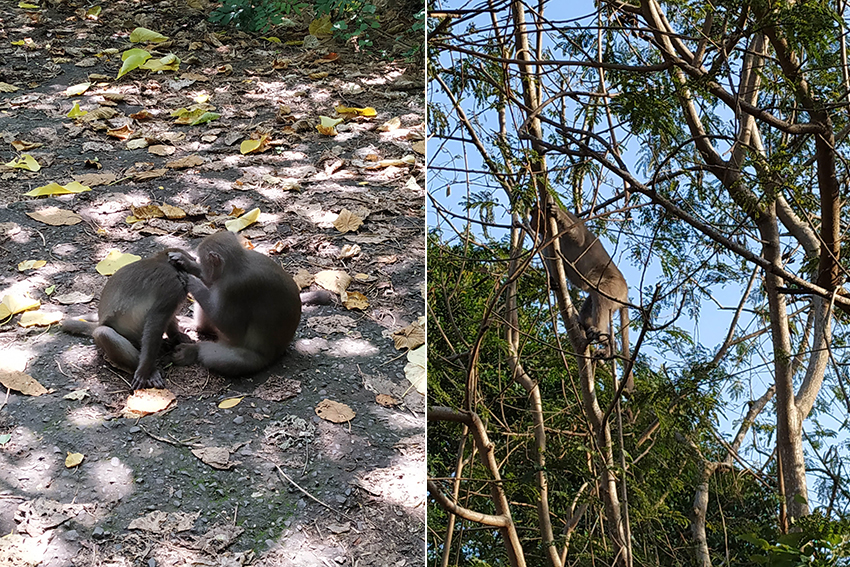
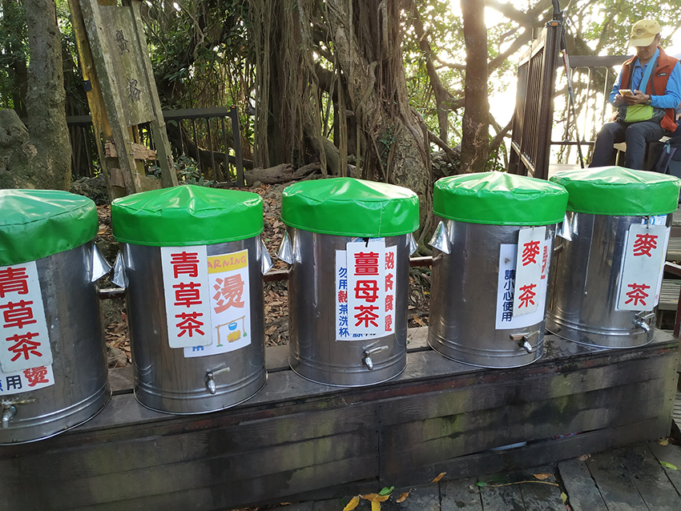
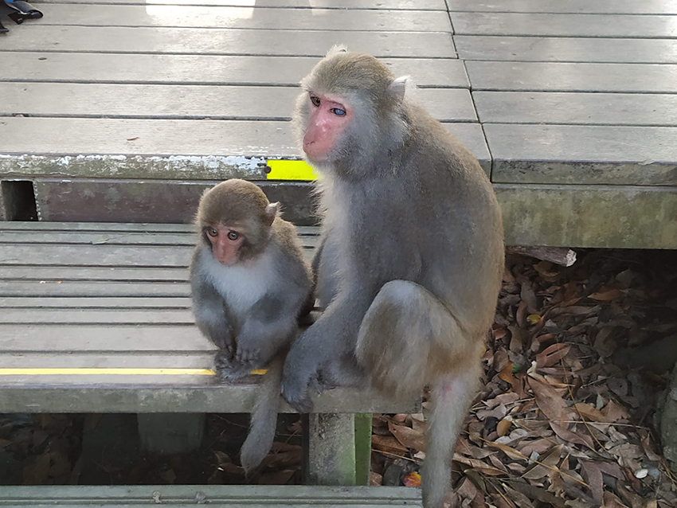
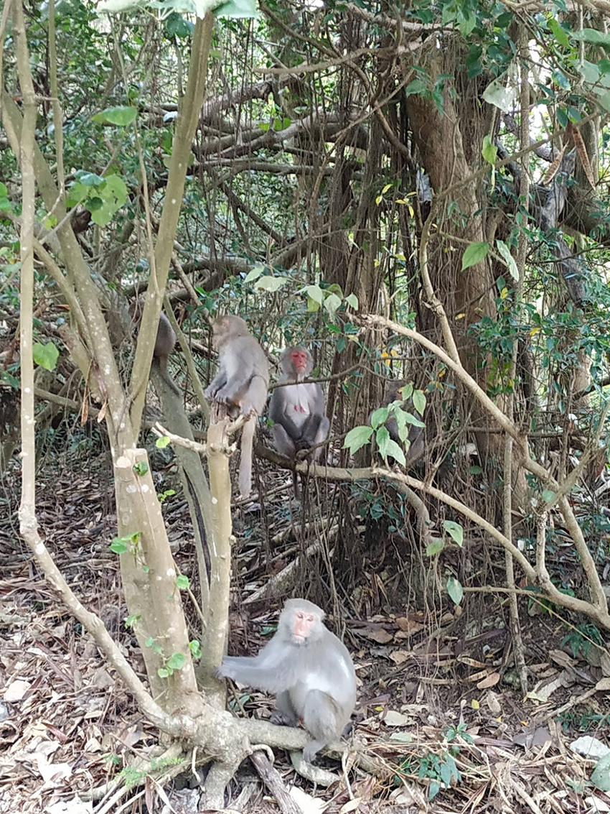

柴山或許是高雄稍微空氣清新一點的地方。小時候跟爸媽到柴山走路，印象最深的是經常看到一個中年人帶著一隻黑得發亮的狗，狗頸上的鈴鐺和背上左右兩側各一個水壺，鈴鈴鈴…遠遠聽到聲音就知道忠誠的狗又幫主人揹水上山了。而每每隔一陣子再見到狗的主人，都覺得變得更黝黑又結實。有很多在地人每天上山，有來維持健康的、有來減肥的、來找山友聊天的…柴山在高雄人的記憶裡就是這麼親切依人，是一塊心中的後院。
|  |
在一個吃飽喝足的過年午後，和家人朋友隨興上山走走，我好幾年沒來了，只覺得山上的獼猴更多了，春天新生的小猴子好奇地看著遊客，大猴子則專心幫彼此抓癢，任誰走過去也懶得抬頭看一眼。還有在樹枝間跳躍擺盪的，得意地向人炫耀著牠們的輕巧，引起陣陣驚呼。每隻猴子，不論大小，看起來都非常精明。不巧大姑走沒多久就身體不適，原本要帶路的先生只好陪伴著大姑，我帶著兩個外甥女和過年期間獨自從台北開車南下的學妹繼續往上走，原本想說再走個十來分鐘就原路折返，即可會合後一起下山。
走著走著就覺得好像應該要到達某個地圖上的定點才肯罷休。遇見迎面而來的山友，也跟我們說往上很快喔、快到了。不久，身邊忽然出現一位大叔，跟我們說往上走有一個叫做盤榕的地方，大概看我們四個女生有點猶豫，便很熱心地叫我們跟著他走。
|  |
一路再往上爬沒多久就到了盤榕，大樹參天，景緻森然，有許多榕樹盤根錯節，果然地如其名。休息時我忽然發現上山準備的水壺在先生的背袋裡，而先生在登山口附近陪大姑…。爬小山口渴忍一下也就過了，幸運的是盤榕這裡有個奉茶站，提供各種免費茶水：白開水、麥茶、熱薑母茶、青草茶，許多山友在這裡喝茶休息聊天，架子上也貼心備有許多乾淨的公用杯，及一盆乾淨的水，方便用完公杯可順手沖洗乾淨，再放回架上讓下一個需要的人使用。
|  |
聽大叔說有一群民間志工團體，不分平日假日，每天揹水上山燒煮，材料也是自掏腰包買的，這正是我熟悉的高雄人的善良與熱情啊。我喝了一杯熱茶，心中滿溢著感恩與感動，這一口茶可是許多陌生義工默默付出的結果，喝在嘴裡，甜在心裡。柴山的免費奉茶站不只有盤榕一處，這是柴山特色之一，真是充滿了人情味兒。盤榕這裡一樣有很多猴子，每隻看起來都很神氣，對著遊客的食物虎視眈眈，聽說只要聽到塑膠袋的聲音就會衝出來搶食，尤其喜歡找生面孔的山友下手。
大叔看我們休息夠了便帶我們下山，一路上講著他在海上服役、搭軍艦到中南美洲的過往。很難想像在沒有網路的大海上航行數月是甚麼樣的光景呢。下山的路有兩種，一種是可以拉繩索陡下的捷徑，一種是較長但平緩的產業道路，我實在很想拉繩索一路往下滑，但細心的大叔怕外甥女拉繩索有閃失，還是選擇安全的產業道路。沿途遇到許多山友，大叔一一打過招呼，這群人每天爬山爬到認識，一件事能每天做就不容易，爬出來的友誼也是大家持續運動的動力吧。
|  |
很多年沒來了，山景沒什麼變，不過太久沒下雨讓原有的綠蓊霞蔚退去，還多了幾分焦灼感。沿路還看到猴子打開乾掉的果莢吃，面露無奈；有幾隻背上帶有新傷，看起來是為了搶地盤剛打過架的。可惜匆忙上山來我什麼也沒帶，不然真的很想分些地瓜水果類的給猴子。這些活力充沛的猴子，熱情無私的民眾，交織出一幅美麗風情，柴山就這樣靜寧悠然立於高雄的西南一隅，在歲歲年年中不斷凝聚著鄉里的情感記憶。